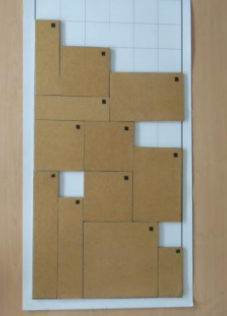

Eixo: Pensamento Computacional - Abstração, Algoritmos, Decomposição,
Reconhecimento de padrões.
Série: Ensino Fundamental I (1º ao 5º ano).
Objetivo: Desenvolver o raciocínio lógico e a capacidade de seguir instruções
precisas. Introduzir conceitos básicos de programação de forma lúdica e desplugada.
Duração: Aproximadamente 45 minutos.
Materiais: Tabuleiro do jogo, peças de diferentes tamanhos, cartões de comando
(setas).
Materiais:
Tabuleiro do jogo "Alice se move" (disponível para download).
Peças de madeira ou papelão de diferentes tamanhos (disponíveis para download).
Cartões de comando com setas (para cima, para baixo, para a esquerda, para a direita).
Preparação da atividade (para o professor):
Imprima e monte o tabuleiro do jogo.
Recorte as peças e os cartões de comando.
Organize a sala em grupos de 3 a 4 alunos. Cada grupo receberá um kit do jogo.

Tabuleiro e peças do jogo.
Execução da atividade (para os alunos):
Os alunos devem posicionar as peças no tabuleiro conforme uma configuração inicial dada pelo
professor.
O objetivo é mover a peça "Alice" (a peça especial) para uma saída específica do tabuleiro.
Os alunos só podem mover as peças utilizando os cartões de comando, criando uma sequência de
passos (algoritmo).
Discussão e reflexão:
O que foi mais difícil? Encontrar o caminho ou criar a sequência de comandos?
Existem outras sequências de comandos que levam ao mesmo resultado?
Como isso se parece com dar instruções para um computador ou um robô?